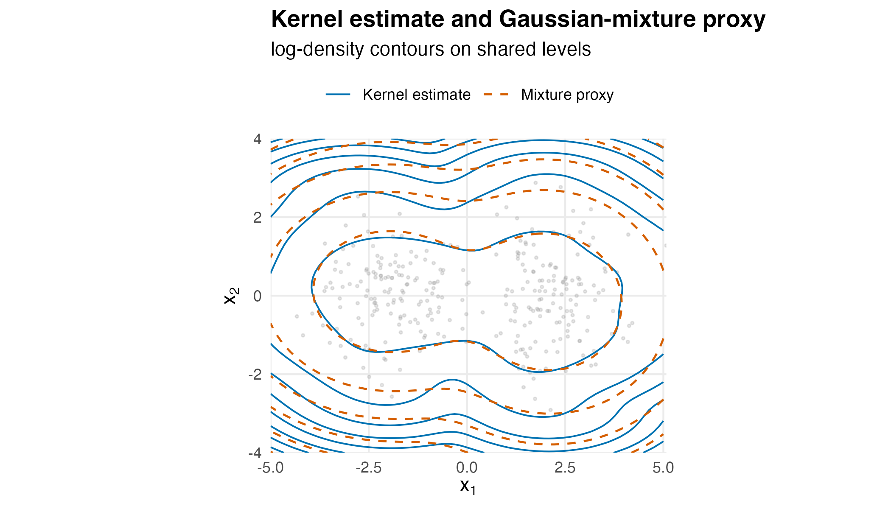
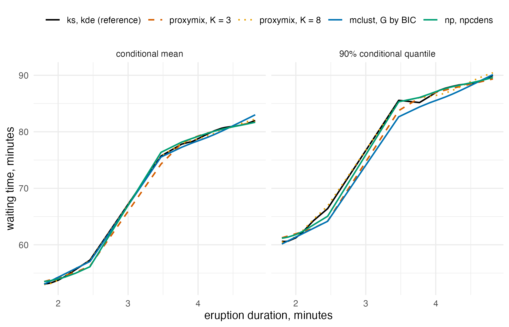

Compressing a kernel density estimate into a mixture
Source:vignettes/articles/extended/from_kde.Rmd
from_kde.Rmd
has_ggplot2 <- requireNamespace("ggplot2", quietly = TRUE)The problem
An analyst has a kernel density estimate of a two-dimensional
quantity and a pipeline that needs to keep conditioning on one
coordinate and integrating out the other. With a Gaussian kernel the
estimate is itself a mixture of n Gaussians, one per point,
so every such query has a closed form, but each one works through all
n components and returns a mixture of the same size. The
question is: I have a kernel density estimate and I need many
marginals and conditionals of it – what does compressing it into a
-component
mixture cost me in accuracy, and what does it save per query?
Package capabilities
A kernel density estimate gives a smooth, non-parametric density from
a sample of n points. With a Gaussian kernel it is an
equal-weight mixture of n Gaussians, so its marginals, its
conditionals by the Schur complement and its pushforwards through affine
maps are exact in closed form, each an n-component mixture.
Every evaluation, conditional and quantile then works through all
n components, and every result stores them.
from_kde() compresses the kernel estimate into an
N-component Gaussian mixture proxy, with N
typically much smaller than n, by treating the estimate as
a normalised, evaluable target and running the regime (iii) KLD-EM of
van der Hoek and Elliott (2024) against it. Its bandwidth
argument takes a rule of thumb by name ("silverman" or
"scott", after Silverman, 1986, and Scott, 1992) or a
numeric value, and validation_size sets the number of
held-out importance draws used to report fit quality (by default, draws
are added until the held-out estimate is precise). The proxy then
supports the same closed-form operator set exposed by the rest of the
package – dgmm(), rgmm(),
gmm_marginalise(), gmm_conditionalise(), and
the affine-Gaussian calculus of gmm_affine() and
gmm_observe() – on N components instead of
n.
ess_summary() reports the importance-sampling
diagnostics of the compression: the effective sample size, the largest
self-normalised weight, and the held-out estimate of the
Kullback-Leibler divergence
,
with
the kernel estimate and
the proxy. hellinger_mc() estimates the squared Hellinger
distance between the proxy and its target by Monte Carlo. The distance
reported below is computed from fresh draws from the proxy, with its
Monte Carlo standard error.
The proxy targets the kernel estimate, not the density the data came from. The bandwidth sets the estimate’s bias-variance trade-off and the proxy inherits it, although a proxy with few components can also smooth away some of the estimate’s sampling noise.
Addressing the problem
Recovering a known mixture
Sample from a known bimodal mixture and ask from_kde()
to recover it. The data here are synthetic: two unit-covariance
Gaussians at
and
,
150 draws each.
set.seed(20260601)
true_means <- cbind(c(-2, 0), c(2, 0))
true_cov <- diag(2)
x <- rbind(
mvnfast::rmvn(150L, mu = true_means[, 1L], sigma = true_cov),
mvnfast::rmvn(150L, mu = true_means[, 2L], sigma = true_cov)
)
fit <- from_kde(
x, N = 2L,
bandwidth = "silverman",
is_size = 2000L, max_iter = 60L, seed = 1L,
validation_size = 2000L
)
fit
#> <gmm_fit>: regime = "kld", K = 2, p = 2
#> target : from_kde
#> iterations : 10
#> converged : TRUE
#> [1] w = 0.5225, |mu| = 2.0526, tr(Sigma) = 2.7785
#> [2] w = 0.4775, |mu| = 1.9564, tr(Sigma) = 2.6586The proxy components sit near the true means. Ordering the fitted components by their first coordinate makes the comparison with the truth direct.
mu_hat <- vapply(fit@means, function(mu) mu, numeric(2L))
comp_order <- order(mu_hat[1L, ])
mu_hat <- mu_hat[, comp_order, drop = FALSE]
weight_hat <- fit@weights[comp_order]
mean_error <- max(abs(mu_hat - true_means))| Component | Fitted | Fitted | True | True | Weight |
|---|---|---|---|---|---|
| 1 | -1.954 | 0.105 | -2 | 0 | 0.478 |
| 2 | 2.046 | -0.159 | 2 | 0 | 0.522 |
Quality of the importance-sampled fit
A healthy regime (iii) fit has an effective sample size close to
is_size and a largest weight of a few parts in a thousand.
The validation block reports a held-out divergence on an independent
importance draw, which is the safeguard against overfitting to one
particular importance realisation.
es <- ess_summary(fit)
validation_se <- fit@diagnostics$validation_mc_se
print(data.frame(is_size = es$is_size, ess = round(es$ess, 1),
ess_relative = round(es$ess_relative, 3),
max_weight = signif(es$max_weight, 3),
validation_kld = signif(es$validation_kld, 3),
validation_se = signif(validation_se, 2)),
row.names = FALSE)
#> is_size ess ess_relative max_weight validation_kld validation_se
#> 2000 1538 0.769 0.00116 0.016 0.0045What the compression costs
The proxy and the kernel estimate are both normalised densities on the same space, so the total variation distance between them can be integrated directly on a grid. The total variation distance is the natural currency: it is the largest difference in probability the two densities can assign to any event.
g1 <- seq(-6, 6, length.out = 160L)
g2 <- seq(-5, 5, length.out = 140L)
grid <- expand.grid(x1 = g1, x2 = g2)
gm <- as.matrix(grid)
cell <- (g1[2L] - g1[1L]) * (g2[2L] - g2[1L])
grid$kde <- exp(fit@target@log_density(gm))
grid$proxy <- dgmm(gm, fit)
total_variation <- 0.5 * sum(abs(grid$kde - grid$proxy)) * cell
mass_grid <- c(kde = sum(grid$kde) * cell, proxy = sum(grid$proxy) * cell)
hell <- hellinger_mc(fit, n_mc = 50000L, seed = 20260926L)
signif(c(total_variation = total_variation, hellinger_sq = hell[["h2"]],
hellinger_se = hell[["se"]]), 3)
#> total_variation hellinger_sq hellinger_se
#> 0.062500 0.004820 0.000423Bandwidth sensitivity
Smaller bandwidths track the data more tightly, at lower bias and higher variance; larger bandwidths smooth the proxy. The proxy inherits this trade-off from the estimate it compresses.
bandwidth_grid <- c(0.2, 0.5, 1.0)
fits <- lapply(bandwidth_grid, function(h) {
from_kde(x, N = 2L, bandwidth = h,
is_size = 1500L, max_iter = 40L, seed = 1L)
})
## trace of the left-hand component's covariance, component 1 of Table 1
trace_left <- function(f) {
j <- which.min(vapply(f@means, function(mu) mu[1L], numeric(1L)))
sum(diag(f@covariances[[j]]))
}| Bandwidth | Effective sample size | Largest weight | Trace of |
|---|---|---|---|
| 0.2 | 791.4 | 0.00313 | 1.675 |
| 0.5 | 1019.0 | 0.00172 | 2.077 |
| 1.0 | 1205.3 | 0.00124 | 3.443 |
Composing the compressed proxy
Once compressed, the proxy is an ordinary mixture of two components, so a conditional or a sample works through two components rather than the 300 of the kernel estimate.
slice <- gmm_conditionalise(fit, given = c(NA, 0))
draws <- rgmm(200L, slice)
c(components = gmm_n_components(slice), dimension = gmm_dim(slice),
draws = nrow(draws))
#> components dimension draws
#> 2 1 200Visualising the compression
The contour comparison shows where the compression spends its error, which the summary distances cannot: the two contour sets are read on shared levels, so any place they part company is a place the proxy has smoothed the estimate.
plot_grid <- expand.grid(
x1 = seq(-5, 5, length.out = 80L),
x2 = seq(-4, 4, length.out = 60L)
)
pm <- as.matrix(plot_grid)
plot_grid$kde <- fit@target@log_density(pm)
plot_grid$proxy <- log(dgmm(pm, fit))
## Shared contour levels so the two log-densities are directly comparable.
brks <- pretty(range(c(plot_grid$kde, plot_grid$proxy), finite = TRUE), 9L)
sample_df <- data.frame(x1 = x[, 1L], x2 = x[, 2L])
ggplot2::ggplot() +
ggplot2::geom_point(data = sample_df, ggplot2::aes(x1, x2),
colour = "grey60", alpha = 0.25, size = 0.5) +
ggplot2::geom_contour(
data = plot_grid,
ggplot2::aes(x1, x2, z = kde, colour = "Kernel estimate",
linetype = "Kernel estimate"),
breaks = brks, linewidth = 0.45
) +
ggplot2::geom_contour(
data = plot_grid,
ggplot2::aes(x1, x2, z = proxy, colour = "Mixture proxy",
linetype = "Mixture proxy"),
breaks = brks, linewidth = 0.55
) +
ggplot2::scale_colour_manual(
name = NULL,
values = c("Kernel estimate" = "#0072B2", "Mixture proxy" = "#D55E00")
) +
ggplot2::scale_linetype_manual(
name = NULL,
values = c("Kernel estimate" = "solid", "Mixture proxy" = "dashed")
) +
ggplot2::coord_equal(expand = FALSE) +
ggplot2::labs(
title = "Kernel estimate and Gaussian-mixture proxy",
subtitle = "log-density contours on shared levels",
x = expression(x[1]), y = expression(x[2])
) +
ggplot2::theme_minimal(base_size = 11) +
ggplot2::theme(plot.title = ggplot2::element_text(face = "bold"),
legend.position = "top",
panel.grid.minor = ggplot2::element_blank())
Log-density contours of the kernel estimate (blue, solid) and the two-component proxy (orange, dashed) on shared levels. On the innermost level, around the two modes, the two nearly coincide. On the outer, low-density levels, beyond about , they separate: the kernel estimate’s contours bend around the few outlying samples and the proxy’s stay smooth.
Interpretation
The 2-component proxy recovers the mixture the 300 samples came from: the fitted means differ from the true means by at most 0.16, and the two components carry weights of 0.478 and 0.522 against a true half and half.
The compression itself was a well-conditioned importance problem. The effective sample size was 1538 out of 2000 draws, or 77 per cent, and the largest single weight was 0.0012, so no handful of draws carried the fit. On an independent importance draw of 2000, the held-out divergence estimate was 0.016, with a Monte Carlo standard error of 0.0045.
The cost of the compression is the direct answer to the question. The
total variation distance between the 300-kernel estimate and the
2-component mixture is 0.062: the two densities agree on the probability
of any event to within about 6.2 percentage points. The grid captures
0.9990 of the kernel estimate’s mass and 0.9993 of the proxy’s. The
squared Hellinger distance, estimated by hellinger_mc()
from 50,000 fresh draws from the proxy, is 0.0048 with a Monte Carlo
standard error of 0.0004, about 11 standard errors from zero. The figure
shows where the remaining error sits: around the two modes the contours
nearly coincide, and on the outer, low-density levels the kernel
estimate bends around the few outlying samples while the two-component
proxy stays smooth. What is bought with that is size. The slice taken
above is a 1-dimensional, 2-component mixture; the same slice of the
kernel estimate is also exact, and has 300 components.
The bandwidth sweep shows the trade-off passing straight through the compression. A wider kernel gives a smoother target and an easier importance problem, and the effective sample size rises from 791 at bandwidth 0.2 to 1205 at bandwidth 1.0, out of 1500 draws. The left-hand component’s covariance trace widens over the same sweep, from 1.67 to 3.44, which is the proxy inheriting the estimate’s smoothing rather than resisting it.
Limitations
from_kde() fits data of up to five dimensions without
comment, warns between six and ten dimensions and refuses above ten.
Regime (iii) is driven by importance sampling, whose effective sample
size falls sharply in high dimensions, and this vignette exercises the
two-dimensional case only. For richer ambient spaces, compose a
low-dimensional proxy with the affine-Gaussian operator calculus rather
than fitting in the ambient space.
Only scalar and diagonal bandwidths are supported. A full-matrix
bandwidth effectively encodes a covariance estimate and blurs the
distinction between the kernel estimate and the mixture; where that is
what is wanted, fit the mixture directly with
fit_proxymix(regime = "sample").
A kernel estimate is normalised by construction, so the returned
gmm_target is flagged as normalised, with a log normalising
constant of zero. That is what makes a Hellinger distance between the
proxy and the estimate meaningful here and lets the divergence
diagnostics report absolute values rather than shifted ones. A target
that is not normalised does not support the same reading.
The constructor does not choose the bandwidth. Use the conventional rules of thumb, passed by name, or a cross-validation procedure outside the package, and pass the chosen bandwidth in. The sweep above shows the consequences of the choice; it does not make the choice.
Finally, the compression earns its place only in some pipelines.
Where the goal is simply to find a Gaussian-mixture density given
samples, the classical expectation-maximisation regime is more direct,
fits in linear time, and does not pay the regime (iii)
importance-sampling tax. Reach for from_kde() when the
kernel estimate’s smoothing is itself a step in the pipeline, or when
its bias-variance trade-off is part of what is being validated
downstream. The numerical illustration that follows measures both sides
of that trade-off, the error the compression adds against the kernel
estimate and the time each conditional query then takes, on two real
datasets and in simulation against a kernel estimator, a
conditional-density estimator and two mixture fitters.
Numerical illustration
Conditionals of two real densities, from six packages
The question is what a conditional query costs once the kernel
estimate has been compressed, in error and in time. Two datasets are
used: the Old Faithful geyser data (Azzalini and Bowman, 1990), 272
eruptions with their duration and the waiting time to the next one,
shipped with R as faithful; and the Palmer penguins data
(Gorman et al., 2014), shipped with R as penguins since
version 4.5.0 (Horst et al., 2022), of which bill length and flipper
length are kept for the birds with both measured. Both scatters are
multimodal, one with two groups and one with three species.
The reference is the kernel estimate itself, computed by ks (Duong,
2007) with its diagonal plug-in bandwidth. The same bandwidth is passed
to from_kde(), so the proxy compresses exactly the density
ks evaluates, and to bkde2D() of KernSmooth (Wand and
Jones, 1995), which bins the same estimate on a grid. np (Hayfield and
Racine, 2008) estimates the conditional density of
given
directly, with its likelihood cross-validated bandwidths. mclust
(Scrucca et al., 2016) and mixtools (Benaglia et al., 2009) fit Gaussian
mixtures to the raw data by expectation-maximisation, mclust choosing
its number of components by BIC and mixtools at its default of two. The
five competitor packages install from CRAN once and load as usual:
install.packages(c("ks", "np", "mclust", "mixtools", "KernSmooth"))At each of 20 values of
,
the 5th to the 95th percentile of the data, every method returns the
conditional mean and the 90 per cent conditional quantile of
.
For a mixture, proxymix’s own or one built from the mclust and mixtools
parameters, both come from gmm_conditionalise(),
gmm_mean() and qgmm() in closed form. For the
kernel estimates and for np, the conditional density is evaluated on a
grid of 401 values of
and the two summaries are read off that grid. The score is the mean
absolute difference from the reference over the 20 values, in the units
of
,
and the time per conditional query is recorded for every method.
as_gmm <- function(w, mu, sigma) {
gmm(weights = w, means = mu, covariances = sigma)
}
## conditional mean and 90% quantile from a density tabulated on y_grid
grid_summary <- function(y_grid, f) {
w <- pmax(f, 0) / sum(pmax(f, 0))
c(mean = sum(w * y_grid),
q90 = approx(cumsum(w), y_grid, xout = 0.9, ties = "ordered")$y)
}
gmm_summary <- function(g, x0) {
s <- gmm_conditionalise(g, given = c(x0, NA))
c(mean = gmm_mean(s), q90 = qgmm(0.9, s))
}
conditional_scores <- function(xy, label) {
h <- sqrt(diag(ks::Hpi.diag(xy)))
x_eval <- quantile(xy[, 1L], probs = seq(0.05, 0.95, length.out = 20L),
names = FALSE)
y_grid <- seq(min(xy[, 2L]) - 3 * h[2L], max(xy[, 2L]) + 3 * h[2L],
length.out = 401L)
kde_cond <- function(x0) {
f <- ks::kde(xy, H = diag(h^2), eval.points = cbind(x0, y_grid))
grid_summary(y_grid, f$estimate)
}
reference <- t(vapply(x_eval, kde_cond, numeric(2L)))
set.seed(20260925)
fits <- list()
for (K in c(3L, 5L, 8L)) {
fits[[paste0("proxymix, K = ", K)]] <-
from_kde(xy, N = K, bandwidth = h, is_size = 20000L, seed = 1L)
}
mc <- Mclust(xy, verbose = FALSE)
fits[["mclust, G by BIC"]] <- as_gmm(
mc$parameters$pro,
lapply(seq_len(mc$G), function(j) mc$parameters$mean[, j]),
lapply(seq_len(mc$G), function(j) mc$parameters$variance$sigma[, , j])
)
## mvnormalmixEM() prints its iteration count, which is discarded
invisible(capture.output(mt <- mvnormalmixEM(xy)))
fits[["mixtools, k = 2"]] <- as_gmm(mt$lambda, mt$mu, mt$sigma)
cd <- npcdens(npcdensbw(xdat = xy[, 1L], ydat = xy[, 2L]))
np_cond <- function(x0) {
f <- predict(cd, newdata = data.frame(xdat = x0, ydat = y_grid))
grid_summary(y_grid, f)
}
bk <- KernSmooth::bkde2D(xy, bandwidth = h, gridsize = c(401L, 401L),
range.x = list(range(x_eval), range(y_grid)))
bk_cond <- function(x0) {
i <- findInterval(x0, bk$x1, all.inside = TRUE)
w <- (x0 - bk$x1[i]) / (bk$x1[i + 1L] - bk$x1[i])
grid_summary(bk$x2, (1 - w) * bk$fhat[i, ] + w * bk$fhat[i + 1L, ])
}
queries <- c(
lapply(fits, function(g) function(x0) gmm_summary(g, x0)),
list("np, npcdens" = np_cond, "KernSmooth, bkde2D" = bk_cond,
"ks, kde (reference)" = kde_cond)
)
curves <- lapply(names(queries), function(method) {
run_query <- function() t(vapply(x_eval, queries[[method]], numeric(2L)))
est <- run_query()
# median of five timed passes over the evaluation points
secs <- median(replicate(5L, system.time(run_query())[[3L]]))
data.frame(data = label, method = method, x = x_eval,
mean = est[, 1L], q90 = est[, 2L],
ms_per_query = 1000 * secs / length(x_eval),
mclust_G = mc$G)
})
curves <- do.call(rbind, curves)
curves$mean_ref <- rep(reference[, 1L], length(queries))
curves$q90_ref <- rep(reference[, 2L], length(queries))
curves
}
faithful_xy <- as.matrix(faithful[, c("eruptions", "waiting")])
penguins_xy <- as.matrix(na.omit(penguins[, c("bill_len", "flipper_len")]))
curves <- rbind(conditional_scores(faithful_xy, "faithful"),
conditional_scores(penguins_xy, "penguins"))
scores <- aggregate(
cbind(mean_err = abs(mean - mean_ref), q90_err = abs(q90 - q90_ref),
ms = ms_per_query) ~ data + method,
data = curves, FUN = mean
)| Method | Mean (F) | 90% (F) | Mean (P) | 90% (P) | ms per query |
|---|---|---|---|---|---|
| proxymix, K = 3 | 0.36 | 0.62 | 0.65 | 0.93 | 0.62 |
| proxymix, K = 5 | 0.29 | 0.47 | 0.71 | 0.73 | 0.68 |
| proxymix, K = 8 | 0.19 | 0.40 | 0.83 | 0.78 | 1.00 |
| mclust, G by BIC | 0.42 | 0.84 | 1.04 | 1.03 | 0.55 |
| mixtools, k = 2 | 0.41 | 0.82 | 1.63 | 1.35 | 0.52 |
| np, npcdens | 0.32 | 0.37 | 0.43 | 0.54 | 2.10 |
| KernSmooth, bkde2D | 0.04 | 0.08 | 0.07 | 0.06 | 0.05 |
| ks, kde (reference) | 0.00 | 0.00 | 0.00 | 0.00 | 17.53 |
show <- c("ks, kde (reference)", "proxymix, K = 3", "proxymix, K = 8",
"mclust, G by BIC", "np, npcdens")
plot_df <- curves[curves$data == "faithful" & curves$method %in% show, ]
plot_df <- rbind(
data.frame(plot_df[, c("method", "x")], what = "conditional mean",
y = plot_df$mean),
data.frame(plot_df[, c("method", "x")], what = "90% conditional quantile",
y = plot_df$q90)
)
plot_df$method <- factor(plot_df$method, levels = show)
plot_df$what <- factor(plot_df$what,
levels = c("conditional mean",
"90% conditional quantile"))
ggplot2::ggplot(plot_df, ggplot2::aes(x, y, colour = method,
linetype = method)) +
ggplot2::geom_line(linewidth = 0.7) +
ggplot2::facet_wrap(~ what) +
ggplot2::scale_colour_manual(
name = NULL,
values = c("#000000", "#D55E00", "#E69F00", "#0072B2", "#009E73")
) +
ggplot2::scale_linetype_manual(
name = NULL,
values = c("solid", "dashed", "dotted", "solid", "solid")
) +
ggplot2::labs(x = "eruption duration, minutes",
y = "waiting time, minutes") +
ggplot2::theme_minimal(base_size = 11) +
ggplot2::theme(legend.position = "top")
Conditional mean (left) and 90% conditional quantile (right) of waiting time given eruption duration on the faithful data, from the ks kernel estimate that is the reference, the proxy compressed from it at three and eight components, mclust fitted to the raw data and the np conditional-density estimate. The eight-component proxy stays within 0.5 minutes of the reference in the conditional mean and within 0.9 minutes in the 90% quantile. In the conditional mean, mclust stays within 1.1 minutes of the reference, and the three-component proxy falls up to 1.5 minutes below it at a duration of 3.5 minutes, the upper end of the jump between the two groups. In the 90% quantile, mclust falls up to 3.0 minutes below the reference from the jump to the long eruptions.
Compressing the faithful estimate to three components moves the conditional mean by 0.36 minutes on average and the 90 per cent quantile by 0.62 minutes, against a standard deviation of 13.6 minutes in waiting time. On faithful more components bring the proxy closer to the reference, to 0.19 and 0.40 minutes at eight. On penguins they do not: the smallest errors among the proxies are at for the mean and for the quantile, and all three sit within a millimetre of the reference on average, against a standard deviation of 14.1 mm in flipper length. mclust chose 3 components on faithful and 3 on penguins. Its conditionals and those of mixtools at two components are further from the kernel reference than every proxy’s on both datasets, for both summaries: on faithful their 90 per cent quantiles are off by 0.84 and 0.82 minutes, against 0.62 for the three-component proxy. That is the expected order: the proxies are fitted to the kernel estimate and the two mixture fitters to the raw data. np estimates the conditional density directly. On penguins it is closer to the reference than every proxy for both summaries. On faithful it is closer to the reference than the proxy at for the mean and than every proxy for the quantile. The binned KernSmooth estimate has a mean absolute error of at most 0.08 minutes or millimetres against the reference, as a second implementation of the same estimator should.
The time column is the other side of the answer, and it measures cost per query. A conditional of the reference, as computed here, evaluates all 272 or 342 kernels at 401 grid points. The same conditional also has a closed form, a mixture of 272 or 342 components, so its cost grows with either way; a conditional of the proxy is a Schur complement over components and a one-dimensional quantile. Averaged over the two datasets, a query on the three-component proxy took 0.62 ms against 17.53 ms on the reference, about 28 times faster on this build. np’s query is cheaper than the reference, since its bandwidth search is done at fit time, and dearer than the mixtures. The binned KernSmooth grid is the cheapest of all, since a conditional is one interpolation between two stored grid rows. On faithful the figure shows the differences around the jump between the short and the long eruptions. There the three-component proxy’s conditional mean falls up to 1.5 minutes below the reference while the eight-component proxy stays within 0.5 minutes of it. mclust’s conditional mean stays within 1.1 minutes of the reference, and its 90 per cent quantile falls up to 3.0 minutes below the reference from the jump to the long eruptions. Two datasets are too few to rank the methods, so the simulation below repeats the comparison on data drawn from a known density.
A simulation benchmark
The simulation draws 100 datasets of 500 points from a
three-component mixture in two dimensions, with weights 0.35, 0.35 and
0.30, means
,
and
,
and covariances the identity, a unit-variance matrix with correlation
0.5, and 0.6 times the identity. Each dataset gets the ks kernel
estimate with its diagonal plug-in bandwidth, compressed by
from_kde() at
= 3, 5 and 8 with 20 000 importance draws, as in the real-data section.
mclust chooses its number of components by BIC, mixtools is given the
true count of three, np estimates the joint density with its likelihood
cross-validated bandwidths, and KernSmooth bins the ks estimate. The
reference is the true mixture. The score is the integrated squared error
of each density against it, computed by quadrature on a 121 by 121 grid
over
,
and the seconds each fit took. The run uses 100 datasets, because each
three-component mixtools fit took a median of 8 seconds and up to 81,
and the Monte Carlo standard error of each mean is reported beside it.
This chunk is complete and runs as shown, but it took about 26 minutes
on one core (R 4.6.1, Apple silicon); the results below are read from
its stored output. For a quick reduced run, change the line
n_rep <- 100L to n_rep <- 5L, which
takes about 1.3 minutes.
library(proxymix)
library(mclust)
library(mixtools)
library(np)
options(np.messages = FALSE)
n <- 500L # points in each dataset
n_rep <- 100L # datasets
K_grid <- c(3L, 5L, 8L)
truth <- list(
weights = c(0.35, 0.35, 0.30),
means = list(c(-2, 0), c(2, 1), c(0, 4)),
covs = list(diag(2), matrix(c(1, 0.5, 0.5, 1), 2L), 0.6 * diag(2))
)
r_truth <- function(n) {
k <- sample.int(3L, n, replace = TRUE, prob = truth$weights)
out <- matrix(NA_real_, n, 2L)
for (j in seq_len(3L)) {
s <- k == j
out[s, ] <- mvnfast::rmvn(sum(s), truth$means[[j]], truth$covs[[j]])
}
out
}
d_truth <- function(pts) {
Reduce(`+`, lapply(seq_len(3L), function(j) {
truth$weights[j] * mvnfast::dmvn(pts, truth$means[[j]], truth$covs[[j]])
}))
}
# quadrature grid for the integrated squared error
g1 <- seq(-6, 6, length.out = 121L)
g2 <- seq(-4, 8, length.out = 121L)
grid <- as.matrix(expand.grid(x1 = g1, x2 = g2))
cell <- (g1[2L] - g1[1L]) * (g2[2L] - g2[1L])
f_true <- d_truth(grid)
ise <- function(f_hat) sum((f_hat - f_true)^2) * cell
as_gmm <- function(w, mu, sigma) {
gmm(weights = w, means = mu, covariances = sigma)
}
one_dataset <- function(r) {
set.seed(r)
x <- r_truth(n)
h <- sqrt(diag(ks::Hpi.diag(x)))
out <- list()
secs <- system.time(
kd <- ks::kde(x, H = diag(h^2), eval.points = grid)
)[[3L]]
out[["ks, kde"]] <- c(ise = ise(kd$estimate), secs = secs, G = NA)
for (K in K_grid) {
secs <- system.time(
f <- from_kde(x, N = K, bandwidth = h, is_size = 20000L, seed = r)
)[[3L]]
out[[paste0("proxymix, K = ", K)]] <-
c(ise = ise(dgmm(grid, f)), secs = secs, G = K)
}
secs <- system.time(mc <- Mclust(x, verbose = FALSE))[[3L]]
g_mc <- as_gmm(
mc$parameters$pro,
lapply(seq_len(mc$G), function(j) mc$parameters$mean[, j]),
lapply(seq_len(mc$G), function(j) mc$parameters$variance$sigma[, , j])
)
out[["mclust, G by BIC"]] <- c(ise = ise(dgmm(grid, g_mc)), secs = secs,
G = mc$G)
secs <- system.time(mt <- mvnormalmixEM(x, k = 3L))[[3L]]
out[["mixtools, k = 3"]] <-
c(ise = ise(dgmm(grid, as_gmm(mt$lambda, mt$mu, mt$sigma))),
secs = secs, G = 3L)
secs <- system.time({
nd <- npudens(npudensbw(x))
f_np <- predict(nd, newdata = data.frame(grid))
})[[3L]]
out[["np, npudens"]] <- c(ise = ise(f_np), secs = secs, G = NA)
secs <- system.time(
bk <- KernSmooth::bkde2D(x, bandwidth = h, gridsize = c(121L, 121L),
range.x = list(range(g1), range(g2)))
)[[3L]]
out[["KernSmooth, bkde2D"]] <- c(ise = ise(as.vector(bk$fhat)),
secs = secs, G = NA)
data.frame(rep = r, method = names(out), do.call(rbind, out),
row.names = NULL)
}
res <- do.call(rbind, lapply(seq_len(n_rep), one_dataset))
sim_tab <- aggregate(cbind(ise, secs) ~ method, data = res, FUN = mean)
sim_tab$ise_se <- aggregate(ise ~ method, data = res, FUN = sd)$ise /
sqrt(n_rep)
sim_tab$G_mode <- aggregate(G ~ method, data = res, na.action = na.pass,
FUN = function(v) if (all(is.na(v))) NA else as.numeric(names(which.max(table(v))))
)$G
sim_tabThe kernel estimate that from_kde() compresses has an
integrated squared error of 1.689 thousandths, and the three-, five- and
eight-component proxies come out at 1.315, 1.525 and 1.692, with Monte
Carlo standard errors of about 0.04. Paired over the same datasets, the
proxy minus the kernel estimate is -0.37 thousandths at three
components, -0.16 at five and 0.003 at eight, with standard errors 0.02,
0.02 and 0.016. At three and five components the compression lowers the
error against the truth, since a proxy with few components cannot follow
the sampling bumps of the kernel estimate; at eight it adds no
detectable error. mclust fitted to the raw data, which chose 3
components in 79 of the 100 datasets, and mixtools at the true count
reach 0.969 and 0.776, below every proxy, as expected when the data come
from the family being fitted. Paired over the same datasets, np’s error
is 0.023 thousandths below that of ks, with a standard error of 0.009,
or 2.6 standard errors. KernSmooth’s error is within 0.0004 thousandths
of that of ks. mixtools took 9.3 seconds a fit against 1.01 to 1.55 for
the proxies and 0.63 for mclust.
| Method | ISE, thousandths | Monte Carlo SE | Fit, seconds |
|---|---|---|---|
| ks, kde | 1.689 | 0.042 | 0.20 |
| proxymix, K = 3 | 1.315 | 0.037 | 1.01 |
| proxymix, K = 5 | 1.525 | 0.040 | 1.18 |
| proxymix, K = 8 | 1.692 | 0.046 | 1.55 |
| mclust, G by BIC | 0.969 | 0.043 | 0.63 |
| mixtools, k = 3 | 0.776 | 0.108 | 9.33 |
| np, npudens | 1.666 | 0.042 | 0.26 |
| KernSmooth, bkde2D | 1.689 | 0.042 | 0.01 |
In this run proxymix came out ahead of the three kernel estimators on integrated squared error at = 3 and 5 and level with ks at = 8, and a conditional query on the three-component proxy was about 28 times faster, averaged over the two datasets, than one on the ks estimate it compresses, evaluated on a grid of 401 values. mclust and mixtools, fitted directly to the data, had lower integrated squared error than any proxy; np was closer to the kernel reference than every proxy on the penguins conditional means; and the binned KernSmooth grid answered conditional queries fastest and closest to the reference. One well-separated mixture at one sample size and one bandwidth rule were tried; heavier tails, overlapping components, higher dimensions and bandwidths chosen by cross-validation are not covered.
Further reading
Choosing between the three fitting regimes sets out why compressing an evaluable-but-unsampleable target is regime (iii) work, and what the classical expectation-maximisation regime would do with the same 300 samples instead. The closed-form operator calculus on a mixture covers the marginalisation, conditioning, pushforward and update operators, at a cost set by on the proxy. One mixture, many methods places the kernel estimate and the compressed proxy on a single axis running from one global component to one component per datum.
References
- Azzalini, A. and Bowman, A. W. (1990). A look at some data on the Old Faithful geyser. Applied Statistics 39(3), 357–365. doi:10.2307/2347385.
- Benaglia, T., Chauveau, D., Hunter, D. R. and Young, D. S. (2009). mixtools: An R package for analyzing finite mixture models. Journal of Statistical Software 32(6), 1–29. doi:10.18637/jss.v032.i06.
- Duong, T. (2007). ks: Kernel density estimation and kernel discriminant analysis for multivariate data in R. Journal of Statistical Software 21(7), 1–16. doi:10.18637/jss.v021.i07.
- Gorman, K. B., Williams, T. D. and Fraser, W. R. (2014). Ecological sexual dimorphism and environmental variability within a community of Antarctic penguins (genus Pygoscelis). PLoS ONE 9(3), e90081. doi:10.1371/journal.pone.0090081.
- Hayfield, T. and Racine, J. S. (2008). Nonparametric econometrics: The np package. Journal of Statistical Software 27(5), 1–32. doi:10.18637/jss.v027.i05.
- Horst, A. M., Presmanes Hill, A. and Gorman, K. B. (2022). Palmer Archipelago penguins data in the palmerpenguins R package – an alternative to Anderson’s irises. The R Journal 14(1), 244–254. doi:10.32614/RJ-2022-020.
- Scott, D. W. (1992). Multivariate Density Estimation: Theory, Practice, and Visualization. Wiley.
- Scrucca, L., Fop, M., Murphy, T. B. and Raftery, A. E. (2016). mclust 5: Clustering, classification and density estimation using Gaussian finite mixture models. The R Journal 8(1), 289–317. doi:10.32614/RJ-2016-021.
- Silverman, B. W. (1986). Density Estimation for Statistics and Data Analysis. Chapman and Hall.
- van der Hoek, J. and Elliott, R. J. (2024). Mixtures of multivariate Gaussians. Stochastic Analysis and Applications. doi:10.1080/07362994.2024.2372605.
- Wand, M. P. and Jones, M. C. (1995). Kernel Smoothing. Chapman and Hall.
Reproduce
The ambient seed is 20260601, hellinger_mc() draws with
seed = 20260926L, and every from_kde() call
passes seed = 1L, so the importance draws do not depend on
the ambient random-number state.
The numerical illustration sets set.seed(20260925)
before the competitor fits on each dataset, fixing the random starts of
np and mixtools. In the simulation each dataset follows
set.seed() with its index, also its from_kde()
seed. The stored results come from the code shown, run on 27 September
2026 with R 4.6.1, proxymix 0.16.0, ks 1.15.3, np 0.70-5, mclust 6.1.3,
mixtools 2.0.0.1 and KernSmooth 2.23-27, and the run raised 0
warnings.
#> R version 4.6.1 (2026-06-24)
#> Platform: aarch64-apple-darwin23
#> Running under: macOS Tahoe 26.6.2
#>
#> Matrix products: default
#> BLAS: /Library/Frameworks/R.framework/Versions/4.6/Resources/lib/
#> libRblas.0.dylib
#> LAPACK: /Library/Frameworks/R.framework/Versions/4.6/Resources/lib/
#> libRlapack.dylib; LAPACK version 3.12.1
#>
#> locale:
#> [1] en_AU.UTF-8/en_AU.UTF-8/en_AU.UTF-8/C/en_AU.UTF-8/en_AU.UTF-8
#>
#> time zone: Australia/Adelaide
#> tzcode source: internal
#>
#> attached base packages:
#> [1] stats graphics grDevices utils datasets methods
#> [7] base
#>
#> other attached packages:
#> [1] np_0.70-5 mixtools_2.0.0.1 mclust_6.1.3
#> [4] proxymix_0.16.0
#>
#> loaded via a namespace (and not attached):
#> [1] gtable_0.3.6 xfun_0.60 bslib_0.12.0
#> [4] ggplot2_4.0.3 htmlwidgets_1.6.4 ks_1.15.3
#> [7] lattice_0.23-1 quadprog_1.5-8 vctrs_0.7.3
#> [10] tools_4.6.1 generics_0.1.4 tibble_3.3.1
#> [13] pkgconfig_2.0.3 Matrix_1.7-6 KernSmooth_2.23-27
#> [16] data.table_1.18.6.1 RColorBrewer_1.1-3 S7_0.2.2
#> [19] desc_1.4.3 lifecycle_1.0.5 cubature_2.1.4-1
#> [22] compiler_4.6.1 farver_2.1.2 MatrixModels_0.5-4
#> [25] textshaping_1.0.5 SparseM_1.84-2 quantreg_6.1
#> [28] htmltools_0.5.9 sass_0.4.10 yaml_2.3.12
#> [31] pracma_2.4.6 plotly_4.12.1 pillar_1.11.1
#> [34] pkgdown_2.2.1 jquerylib_0.1.4 tidyr_1.3.2
#> [37] MASS_7.3-66 cachem_1.1.0 boot_1.3-32
#> [40] nlme_3.1-171 tidyselect_1.2.1 digest_0.6.39
#> [43] mvtnorm_1.4-2 kernlab_0.9-33 dplyr_1.2.1
#> [46] purrr_1.2.2 labeling_0.4.3 splines_4.6.1
#> [49] fastmap_1.2.0 grid_4.6.1 cli_3.6.6
#> [52] magrittr_2.0.5 dichromat_2.0-1 survival_3.8-11
#> [55] withr_3.0.3 scales_1.4.0 segmented_2.2-1
#> [58] rmarkdown_2.32 httr_1.4.9 otel_0.2.0
#> [61] ragg_1.5.2 mvnfast_0.2.8 evaluate_1.0.5
#> [64] knitr_1.51 viridisLite_0.4.3 rlang_1.3.0
#> [67] Rcpp_1.1.2 isoband_0.3.0 glue_1.8.1
#> [70] jsonlite_2.0.0 R6_2.6.1 systemfonts_1.3.2
#> [73] fs_2.1.0